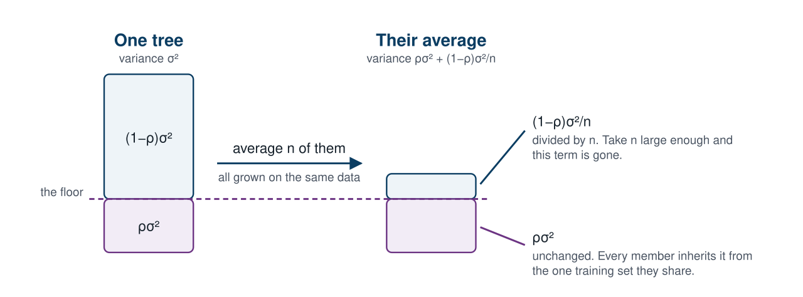
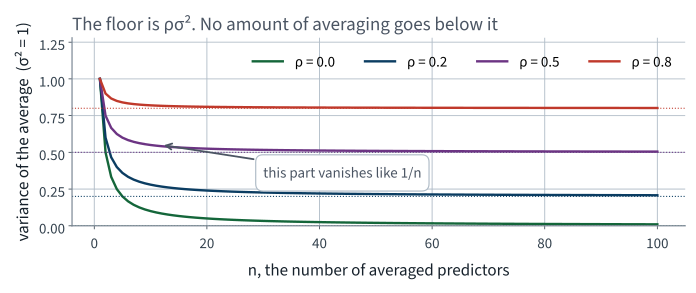
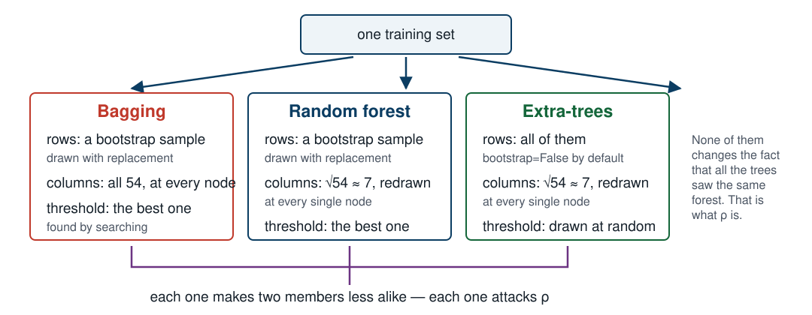
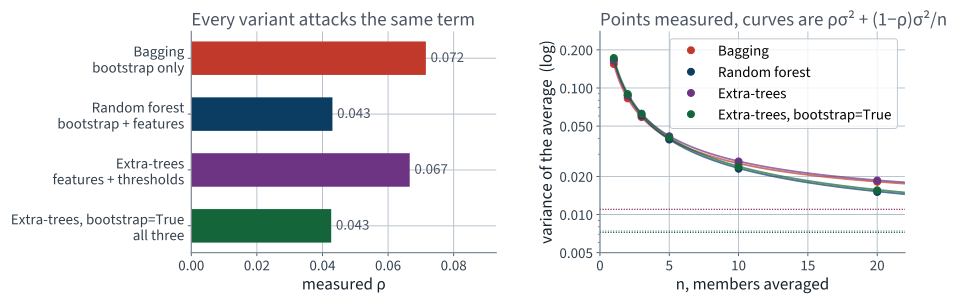
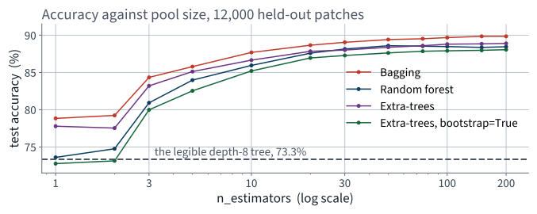
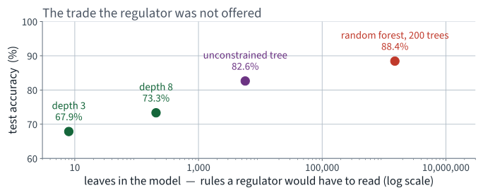
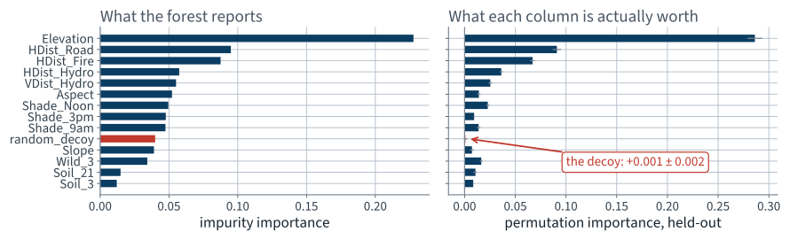

Forest CoverType · many models, and what averaging can and cannot do
Lecture 7 Géron Ch. 6
Applications of Machine Learning
BSc Mathematics of Artificial Intelligence · Third year
The previous lecture built a decision tree on this same dataset — 60,000 patches of forest, 54 cartographic columns, seven species, split 48,000 / 12,000. CART chose each split to minimise the size-weighted impurity of the two children, and the brief’s eight conditions per prediction fixed the depth at 8.
| Forest CoverType | Test accuracy | Conditions per justification |
|---|---|---|
| Always “Lodgepole Pine” | 48.8% | 0 |
| Depth-8 tree, minimum leaf 20 | 73.0% | 7.97 |
| Unconstrained tree | 82.6% | 17.88 |
Nothing on that table is wrong. It is also not the whole story, and the missing part is what today repairs.
Measured on one run of this lecture’s notebook; hardware, library versions and random seeds can make a re-run differ slightly.
A stable metric, an unstable model. In the language of Lecture 5’s decomposition, this is variance: sensitivity of the fitted function to the particular training sample.
The whole of today follows from one question: what does averaging do to variance?
Measured on one run of this lecture’s notebook; hardware, library versions and random seeds can make a re-run differ slightly.
Ask a difficult question of a thousand random people and aggregate their answers. The aggregate is often better than an expert’s. The same is true of models, and it has a name: an ensemble.
“Sufficiently diverse” is doing all the work in that sentence, and it is the informal name of a quantity we are about to define. Before long it will have a symbol, a formula and a measured value on this dataset.
Forget trees for a moment.
You have $n$ predictors of the same quantity. Each has variance $\sigma^2$. You average them.
What is $\operatorname{Var}(\bar{f})$?
With $\operatorname{Var}(f_1) = \operatorname{Var}(f_2) = \sigma^2$ and $\operatorname{Corr}(f_1, f_2) = \rho$:
$\rho = 0$ halves the variance; $\rho = 1$ leaves it at $\sigma^2$, and averaging achieves nothing. For $n$ identically distributed predictors with a common pairwise correlation $\rho$, the same expansion — $n$ variances and $n(n-1)$ covariances $\rho\sigma^2$, over $n^2$ — gives

Everything above the dashed line can be averaged away. Nothing below it can.

Four curves, four floors. The floor is set entirely by $\rho$ — which is why every ensemble variant you are about to meet is an attempt to lower it.
Point 4 is the one that gets forgotten, and it is the one we will measure — and be embarrassed by — later today.
Combine different algorithms fitted to the same data.
from sklearn.ensemble import VotingClassifier
vote = VotingClassifier(
[("tree", DecisionTreeClassifier(random_state=42)),
("logreg", LogisticRegression(max_iter=1000)),
("knn", KNeighborsClassifier(n_neighbors=5))], voting="soft")
voting="hard" — majority of the predicted labelsvoting="soft" — average of the predicted
probabilities; usually better, because a confident member outweighs
several hesitant onesDifferent algorithms make different kinds of errors, which is the informal way of saying $\rho$ is small. The formula applies unchanged.
Bootstrap aggregating. Draw $m$ rows from the training set with replacement, fit a tree, and repeat $n$ times.
Pasting is the same thing without replacement. It produces less diverse members, so bagging usually wins — but it is a cheap thing to cross-validate rather than assume.
Animation
from sklearn.ensemble import BaggingClassifier
bag = BaggingClassifier(
DecisionTreeClassifier(random_state=42), # unconstrained members
n_estimators=200, bootstrap=True, oob_score=True,
random_state=42, n_jobs=-1)
bag.fit(X_train, y_train)
print(f"out-of-bag {bag.oob_score_:.1%}")
The members are unconstrained trees. We want each one to have low bias, because averaging cannot remove bias — and we are about to average the variance away, so there is no reason to restrict their depth.
Each member never sees about 37% of the rows — its out-of-bag instances. Score each member on its own out-of-bag rows and you have a generalisation estimate with no validation split and no extra fit.
Cheap, and it does not replace the test set. It replaces the validation set. If out-of-bag comes out much better than the test score, something in your pipeline saw the out-of-bag rows anyway.
bootstrap=False — the extra-trees default —
there are no out-of-bag rows and oob_score=True raisesBagging, plus one more source of difference: at every node of every tree, only a random subset of the features is considered for the split.
from sklearn.ensemble import RandomForestClassifier
rnd = RandomForestClassifier(n_estimators=200, max_features="sqrt",
random_state=42, n_jobs=-1).fit(X_train, y_train)
max_features="sqrt" is the classification
default: $\lfloor\sqrt{54}\rfloor = 7$ of the 54 columns, drawn afresh at each
node. A tree with 200 nodes therefore draws 200 different subsets.
One further step. Having chosen the candidate features, do not search for the best threshold — draw one at random for each candidate and keep the best of those.
bootstrap=False — the
random thresholds replace the bootstrap rather than joining
itThat default is a decision somebody else made, it is not what most descriptions of extra-trees imply, and we are going to measure what it costs rather than argue about it.
Measured on one run of this lecture’s notebook; hardware, library versions and random seeds can make a re-run differ slightly.

Rows, columns, thresholds. Three knobs, and all three are turned for the same reason.
That is the payoff of the derivation, and it is the thing to remember if you remember one thing from this lecture.
It is also a claim, and this course does not accept claims. Measure it.

Measured across 20 disjoint training sets of 20,000 rows, so that the shared part of the variance has something to come from. The points are measured and the curves are $\rho\sigma^2 + (1-\rho)\sigma^2/n$; nothing was fitted to make them line up.
| 200 members, 48,000 training patches | 10 members | 200 members |
|---|---|---|
| Bagging | 87.7% | 89.8% |
| Extra-trees | 86.7% | 88.9% |
| Random forest | 85.9% | 88.4% |
Extra-trees, bootstrap=True | 85.2% | 88.0% |
| The legible depth-8 tree | — | 73.0% |
| Always “Lodgepole Pine” | — | 48.8% |
Every ensemble beats the constrained tree by at least fifteen points, and the unconstrained tree by at least five. The last 190 members buy about two.
Measured on one run of this lecture’s notebook; hardware, library versions and random seeds can make a re-run differ slightly.

Most of the gain arrives by thirty members, exactly as $(1-\rho)\sigma^2/n$ says it should.
| Ensemble | $\rho$ | One member’s accuracy | Ensemble accuracy |
|---|---|---|---|
| Bagging | 0.072 | 78.8% | 89.8% |
| Extra-trees | 0.067 | 77.8% | 88.9% |
| Random forest | 0.043 | 73.6% | 88.4% |
Extra-trees, bootstrap=True | 0.043 | 72.8% | 88.0% |
The ensemble with the highest $\rho$ is the most accurate.
Point 4 of the formula’s reading, measured: every mechanism that lowers $\rho$ does it by handicapping the members, $\sigma^2$ sits in both terms, and the formula says nothing about bias.
Measured on one run of this lecture’s notebook; hardware, library versions and random seeds can make a re-run differ slightly.
We removed the variance. Ask what happened to the thing the agency asked for.
total = sum(t.get_n_leaves() for t in rnd.estimators_)
print(f"{total:,} leaves across the 200 trees")
1,497,919 leaves across the 200 trees
The justification for one prediction is now 200 decision paths and a vote.

Fifteen points of accuracy, and four orders of magnitude more model to read.
A single tree’s predict_proba returns the
class proportions of one leaf: piecewise constant, identical for every patch
reaching that leaf, and often built on a handful of training rows.
An ensemble averages 200 such vectors, each from a different leaf of a different tree. The result varies smoothly across the feature space and is better calibrated — one thing the agency asked for that averaging improves rather than destroys.
imp = pd.Series(rnd.feature_importances_, index=X_train.columns)
print(imp.sort_values(ascending=False).head(5).round(3))
feature_importances_ sums, over every node that
split on a feature, the weighted impurity reduction that split achieved
— the $\Delta I$ of the previous lecture, accumulated.
It runs, it is fast, and the top of the list is entirely sensible: elevation first, then the distances. Nothing invites suspicion.
Before trusting any ranking, ask what it would look like on a variable you know carries no information. If you cannot answer, add one and find out.
rng = np.random.default_rng(42)
X_tr2 = X_train.assign(random_decoy=rng.random(len(X_train)))
X_te2 = X_test.assign(random_decoy=rng.random(len(X_test)))
rnd2 = RandomForestClassifier(n_estimators=100, max_features="sqrt",
random_state=42, n_jobs=-1).fit(X_tr2, y_train)
A column of uniform random numbers. It cannot possibly carry information about which trees grow where. Where does it rank among the 55?
Before the answer, a second measurement to set beside it. Shuffle one column of the held-out set, re-score, and see how much accuracy falls. Repeat, and report a spread.
from sklearn.inspection import permutation_importance
r = permutation_importance(rnd2, X_te2, y_test, n_repeats=5,
random_state=42, n_jobs=-1)
permutation_importance goes beyond Chapter 6.
beyond the syllabus, for context
It is here because the alternative is to ship the biased measurement, and
because the idea — break the column and see what breaks — is
worth knowing.

Same model, same columns, same ordering of the rows. The decoy is tenth on the left and zero on the right.
Everything so far trains members in parallel and averages them. Boosting trains them in sequence, each one correcting its predecessor.
Two consequences: boosting cannot be parallelised across members, and it is much easier to overfit with. Both follow from the sequence.
from sklearn.ensemble import AdaBoostClassifier
ada = AdaBoostClassifier(DecisionTreeClassifier(max_depth=1),
n_estimators=200, learning_rate=0.5,
random_state=42)
If it overfits, reduce n_estimators or
learning_rate, or regularise the base estimator.
Same sequence, different correction. Instead of reweighting the instances, fit each new learner to the residual errors of the ensemble so far.
learning_rate scales each member’s contribution. A low
rate needs more members and generalises better — this is
shrinkagen_iter_no_changeHistGradientBoostingClassifier bins each feature
into at most 255 buckets before growing anything, so a split search costs
$O(\text{bins})$ rather than $O(m)$.
from sklearn.ensemble import HistGradientBoostingClassifier
hgb = HistGradientBoostingClassifier(max_iter=100, learning_rate=0.05,
early_stopping=False,
random_state=42).fit(X_train, y_train)
On this dataset, at a budget that fits a lecture, it lands several points below the bagged forest. The notebook measures both, and measures what happens when you raise the learning rate. Usual is not always.
Rather than voting or averaging, train a model to do the aggregation. The base learners’ predictions become the input features of a final estimator, the blender.
StackingClassifier does this with cross-validation
internally, which is the only reason it is safe to use| Situation | Reach for |
|---|---|
| A high-variance base learner and time to spare | bagging or a random forest |
| Many weakly informative columns | a random forest — feature subsampling earns its keep |
| Training time is the binding constraint | extra-trees |
| You want the strongest tabular model | histogram gradient boosting — usually, and measure it against a forest anyway |
| You must justify individual predictions | none of them — go back to one tree |
The last row is the one this pair of lectures exists to teach, and it is the row people skip.
The diagnosis was instability, not inaccuracy. So test the thing that was diagnosed, not the thing that is easy to measure.
| Random forest, 20 disjoint training sets | Measured |
|---|---|
| Variance of one member’s correctness | 0.16734 |
| Variance of the average of 20 | 0.01508 |
| Share of the variance the averaging removed | 91.0% |
| The floor $\rho\sigma^2$ it cannot reach below | 0.00721 |
Nine tenths of a single member’s variance, gone — and we knew before starting both that it would stop and roughly where. The notebook repeats the twenty-subsample disagreement measurement on a forest; predict the answer before you run it.
Measured on one run of this lecture’s notebook; hardware, library versions and random seeds can make a re-run differ slightly.
max_features=None on the random forest, which turns it back
into bagging. Watch $\rho$ rise, each member get better, and the ensemble
accuracy rise with it — the trade of the whole lecture, in one keyword.
Measured on one run of this lecture’s notebook; hardware, library versions and random seeds can make a re-run differ slightly.
| Topic | Chapter |
|---|---|
| Voting classifiers, hard and soft | 6 |
| Bagging, pasting, out-of-bag evaluation | 6 |
| Random forests, extra-trees, feature importance | 6 |
| AdaBoost, gradient boosting, histogram-based boosting | 6 |
| Stacking and the blender | 6 |
| Decision trees, impurity, instability | 5 |
| The bias–variance decomposition | 4 |
Not presented — for afterwards
five, in the style of the written paper
bootstrap=False and oob_score=True. State what happens and why. [3]Solutions on Lecture 8’s deck.
Measured on one run of this lecture’s notebook; hardware, library versions and random seeds can make a re-run differ slightly.
Solutions on Lecture 8’s deck.
The five set at the end of Lecture 6
not part of this lecture
1. A node holds 100 training patches: 50 of one species, 30 of a second and 20 of a third. Compute its Gini…
$G = 1 - (0.5^2 + 0.3^2 + 0.2^2) = 1 - 0.38 = 0.62$. A pure node scores 0.
2. On a two-class problem, entropy halved and Gini never differ by more than 0.055 at any node. Two candidate…
No. Each split’s weighted entropy halved is its weighted Gini plus a gap between 0 and 0.055, so the 0.08 difference shrinks to at least 0.025 and keeps its sign.
3. An unconstrained tree with 5,699 leaves scores 100.0% on its 48,000 training patches. Explain why that number…
With about eight patches per leaf the tree has isolated almost every training patch, so 100% holds by construction. Report the cross-validated accuracy on the training set — 82.1% here.
4. Under the depth-8 cap the grid prefers min_samples_leaf=1 (73.75% cross-validated) to 20 (73.35%). Give the…
A leaf of one turns the justification into ‘100% of the 1’ — a single patch, which is not the auditable evidence the brief requires. Report the 0.40 points it costs.
Measured on one run of this lecture’s notebook; hardware, library versions and random seeds can make a re-run differ slightly.
5. Per-class recall shows one class far below the rest. Give two responses that do not involve changing the…
Report per-class recall beside the headline, and take the question back to the client. Report first.
Lecture 8 · Géron Ch. 7–8
PCA via the SVD — in what sense the principal subspace minimises
reconstruction error, and how many components to keep
Then clustering: k-means, the silhouette, and what a score cannot choose
DBSCAN, Gaussian mixtures and anomaly detection
Run the Lecture 7 notebook first